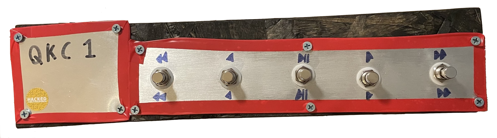
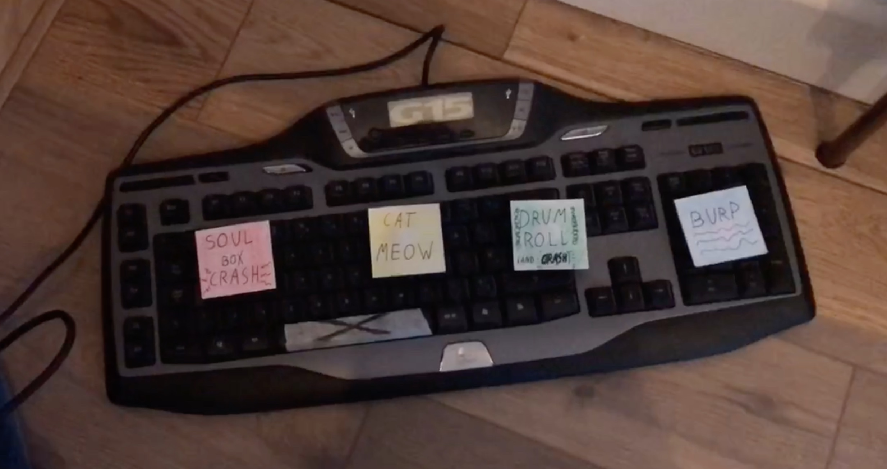
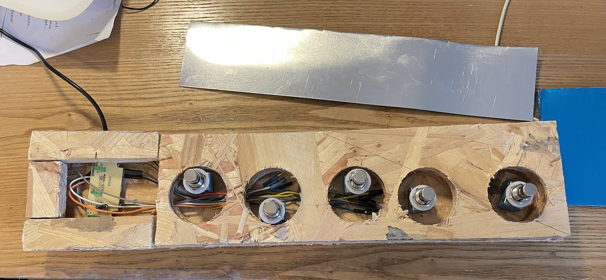
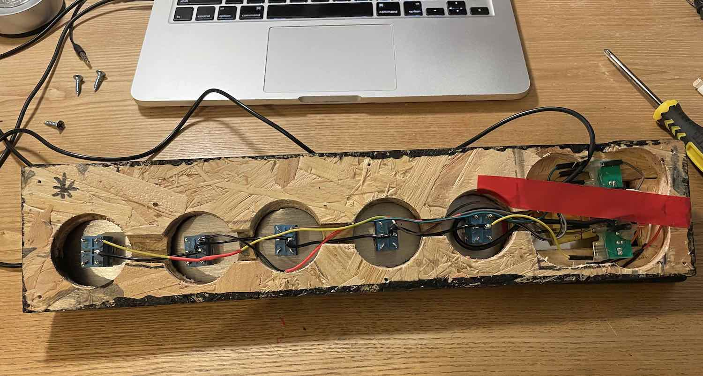
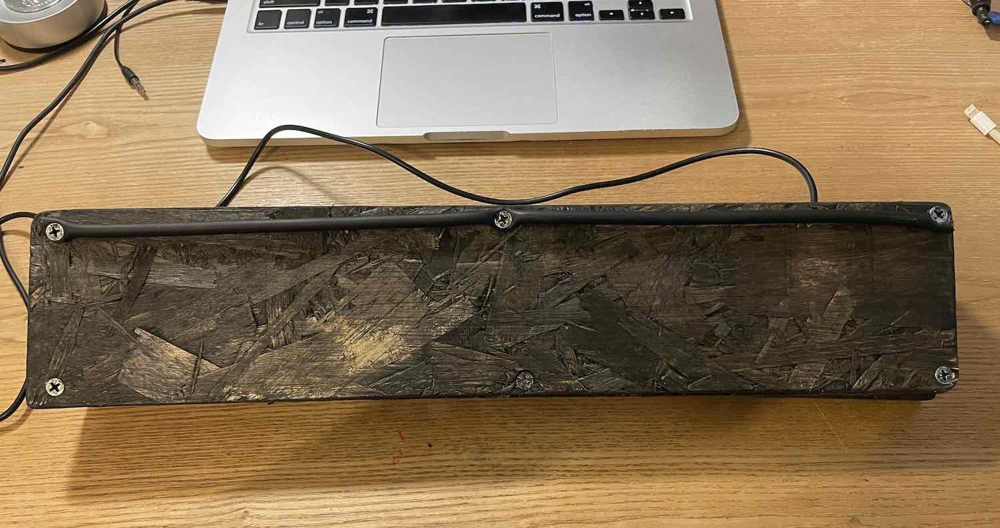
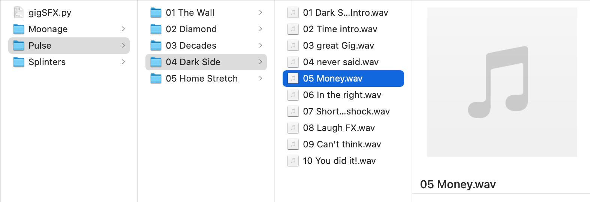
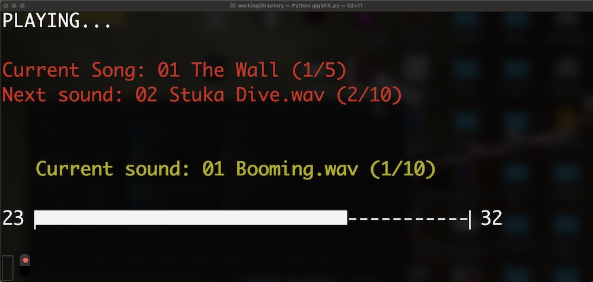
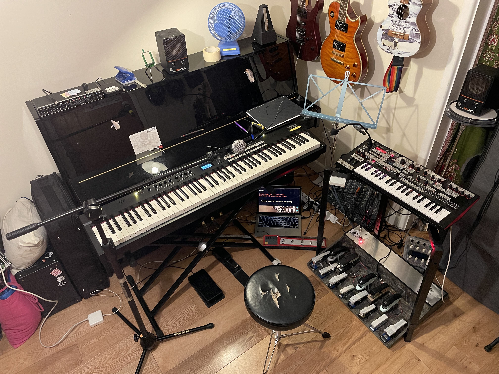

A purpose-built footswitch controller for playing sound effects during performances

In mid-2025, I joined a Pink Floyd cover band who required me to handle all keys parts and all sound effects, without any backing tracks. I've already made and use a foot controller for when more notes are needed but my hands are both busy, and now I needed a quick way to trigger SFX without taking my hands off of the keyboard. I also had some left over material lying around from the construction of the aforementioned MISC1, which would be good to use up.
I had already solved this problem once before, when my work writing and playing original music for a youth theatre production required me to play piano and make sound effects at the same time. What's more, the solution I used then was itself a continuation of earlier work done on my EPQ (a 'smart' boombox), which I've yet to write up whatsoever.
The solution to the EPQ, the Splinters SFX, and the Pink Floyd show all centre around the Python library Pyglet, which is intended for game development purposes. It is primarily useful to me for it's capacity to respond in real-time to keyboard input, and to play sounds.

The Splinters soundbox was a QWERTY keyboard with LEGO bricks attached to specific keys to elevate them so that I could press each one individually with my foot. Then I wrote a simple program that linked each key to an audio file loaded as a pre-buffered sound source (important for instant playback with no decoding latency), and started it at the beginning of each show. This worked quite well for Splinters, but needed development as the setup wouldn't scale well if many more sounds were required, and I felt like I was going to break the keyboard even with the lightest of footpresses.
The answer was building some dedicated hardware, and then writing a new programme which could scale to play any number of audio samples without too much added complexity.
I bought a QWERTY keyboard and took it apart, removing the plastic layers containing the key traces and getting to the controller itself. Keys in a QWERTY keyboard are generally mapped out like a table, with grid references for each key (an interesting byproduct of this is that certain key-presses can't be registered in combination with each other). When a key is pressed, it completes a connection between a row and a column, and the microcontroller works out which key it was and sends the data to the computer. Once the controller was isolated from the keyboard, it was fairly easy to attach my own momentary switches to various combinations of board contacts and start sending key-presses to the computer.

QKC1 uses materials left over from construction of MISC1, namely chipboard and sheet aluminium. As this device is smaller, I decided not to build a box with a metal lid, and instead to glue and clamp three layers of chipboard together to build up the necessary height and thickness, with a layer of aluminium screwed on top. The interior layers of this chipboard/metal sandwich are drilled and sawed out to accommodate the electronics of the footswitches and keyboard control board. The aluminium sheet was cut to size using a pair of tin snips, and all sharp edges were covered with insulation tape. I measured the Marshall amplifier footswitch that the Pink Floyd band's guitarist uses in order to determine the spacing of my footswitches, although I would make the buttons a little further apart if given the opportunity to re-do this project.

Finishing touches were few and far between; I had a matter of weeks before the first gig with this band, and so needed to throw this project together quickly so I had time to practice with it sufficiently. The whole thing had all sharp and splintered edges sanded down, and was then painted black to look better on stage. When I painted MISC1, I used a mixture of PVA glue and black paint, with the hope that this would seal the flakey surface of the chipboard better than paint alone. This doesn't seem to be the case; the paint-only covering on QKC1 does a fine job of preventing flaking.

The only other finishing touch was the elevation of the far underside of the device, angling it towards me a little and giving it extra purchase on the floor so that my usage of it didn't push it away from me as much. Elevation came in the form of a short length of broken instrument cable, screwed on to the bottom of the QKC1.

Individual sounds must have their filenames prepended with XX where XX= the order of the sound in the gig, for example 05 Money.wav. These files are stored in a similarly-numbered folder for general grouping purposes within the gig, and all folders for a particular gig are stored in a gig folder. Thus, the filepath for the example above is Pulse/04 Dark Side/05 Money.wav. All of the gig folders are stored at the same level as the programme itself. At runtime, the programme checks for folders in it's directory and lists them as available gigs. When a user picks one, the programme walks through all subfolders of the selected gig folder and loads them into lists ready for browsing by the user.

For user control, we generate a window which can capture keyboard input. I could (and probably should) have the visual output of the programme display in such a window, but for speed of coding I stuck to my CLI ways, using the generated window only for input and inflating a terminal window with coloured text to ludicrous size to act as a primitive GUI. With the hardware side of the project registering as a USB QWERTY keyboard, all the programme needs to do is accept whatever keystrokes come in. An if elif else statement covers this nicely.
Sound playback is built into Pyglet, with functions available for play, pause and scrubbing, alongside queueing multiple files to play in sequence, at different volumes or speeds, etc. The only slightly difficult bit was moving between files, which involves quickly queueing the new file while the old one is either playing or sitting there waiting to play, and then skipping to the new file. Many logic errors occured trying to move through various nested listed of files in songs in gigs, but I got it straightened out in the end. For ease of use, I added a feature which auto-advances to the next sound after the previous one finishes playing, so that if I forget to manually advance to the next sound and then get to the cue for it to come in, I only have to frantically tap one button on the floor, not two in quick succession.

The finished device+my laptop has a spot in my keyboard setup in-between the stage piano and the synthesiser, on the 45 degree angle. It nestles in pretty snugly, but is accessible enough. Audio comes out of my laptop's headphone jack and goes into my stage piano via the external audio input, allowing me control over the volume via a dedicated knob on the stage piano- useful for fades or unexpected volume level jumps. This increases my minimum plug socket requirement for the full rig to three (my laptop is ancient and the battery is no longer capable of holding enough charge for several hours of soundcheck + gig), so now I bring an extension cable of my own to gigs.
Having used the QKC1 in a gig, I can attest that it does indeed do the job. The Pink Floyd songs that so need sound effects were all well-tended to, and the sound navigation was pretty usable. The only problems with the device were the inability to play multiple sounds at once (by design, so not a major issue provided additional demands don't come up in the future), and the fact that the CLI output was laggy, not updating consistently when I navigated between sounds. I solved this later with Pyglet's pyglet.clock.schedule_interval(f,n) function, which allows the scheduling of some function f, to be run every n seconds. This let me update the screen very regularly, and also let me add a progress bar so I could see how much time a sample has left.
Additionally, I have adapted the QKC1 for use with Mr Pineapple (an originals band I play with) with a reversion back to the one-effect-per-button functionality of the original Splinters prototype, so that the lead singer/guitarist can stomp on one of the newly-labelled buttons to trigger a hard-coded sound effect without having to consult a screen or navigate around. That should make it's debut in early 2026, if all goes well. Nice to have made a useful little piece of gear, and hopefully it has many gigs ahead of it.